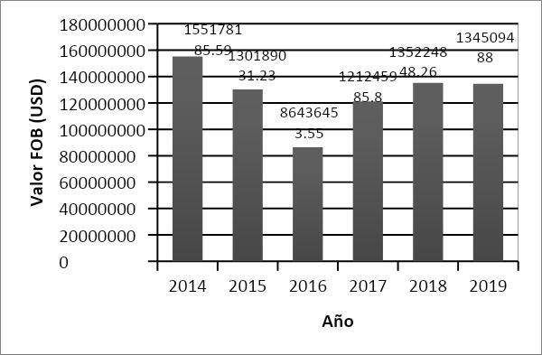
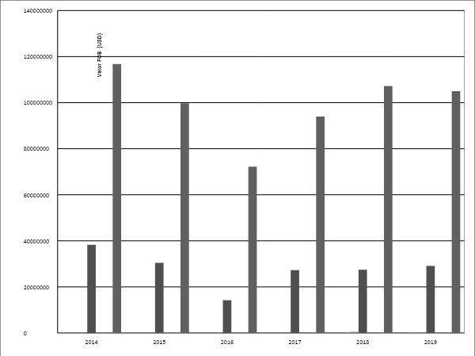
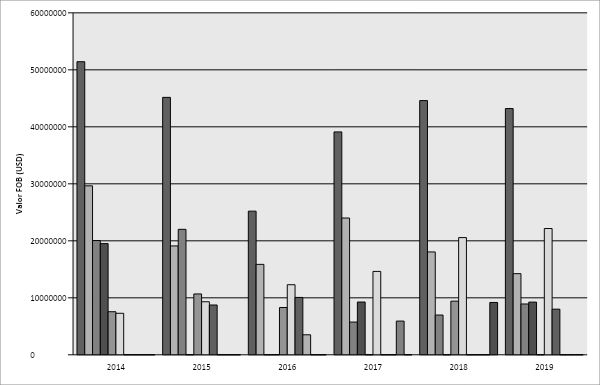
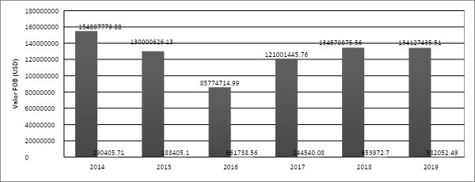
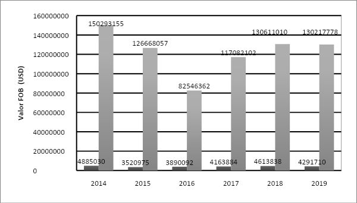
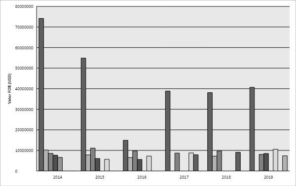
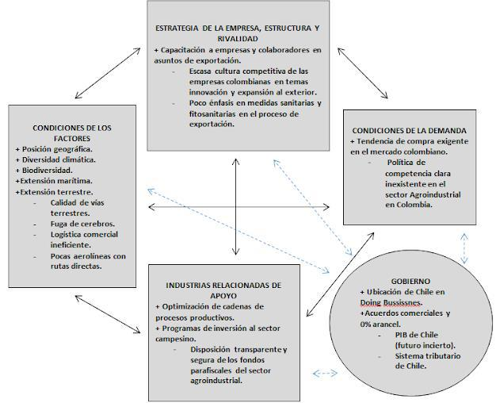

Introducción
Colombia y Chile tienen un proceso de integración económica que se ha forjado desde 1994
hasta la fecha, los tratados y acuerdos que se han firmado son en pro de aumentar la
comercialización de mercancías entre los países. Dentro de las necesidades de Colombia, se encuentra ampliar
y transformar la canasta exportadora del país, para evitar un déficit en la balanza
comercial aún más amplio. El sector agroindustrial tiene una amplia variedad de productos que
pueden ser aprovechados para solucionar esta situación, por lo que se decide analizar si se está
aprovechando el potencial de este sector.
Referentes como la ventaja Absoluta de Adam Smith, la ventaja comparativa de David
Ricardo, la economía en escala, teorías evolucionistas y de innovación, ofrecen bases teóricas para
lograr el máximo aprovechamiento económico y productivo de un sector. Esto, sumado con un
extenso marco legal en el que Colombia y Chile han trabajado en conjunto durante años y la
conveniente ubicación geográfica de los países en cuestión supone una guía sólida para el comercio
entre estos.
Para determinar cuál ha sido el comportamiento de las exportaciones del sector
agroindustrial hacia Chile entre los años 2014 y 2019 se toman datos históricos de Legiscomex, se
tabulan, grafican y analizan, se diseña una matriz que facilita el análisis de los datos y por último
se determina los retos y las oportunidades a los que se enfrenta Colombia para aumentar las
exportaciones del sector agroindustrial a Chile.
Los resultados evidencian que después de entrar en vigor la Alianza del Pacifico, las
exportaciones disminuyeron considerablemente los primeros años y luego empezaron a tomar
fuerza lentamente, es aquí donde se deben considerar otro tipo de variables diferente a los tratados
comerciales firmados, variables como la situación económica del país y de las empresas, políticas
monetarias y de competencia, sistemas logísticos, cultura de compra, control y aplicación de
medidas sanitarias, condiciones geográficas y climáticas.
Metodología
Tipo de estudio
La presente investigación cuenta con un enfoque cuantitativo, ya que se basa en la selección
de datos estadísticos de fuentes secundarias con el objetivo de analizar variables numéricas y
determinar el comportamiento que han tenido las exportaciones del sector agroindustrial al
mercado de Chile entre los años 2014 y 2019.
Para la investigación se escoge el diseño no experimental de corte transversal porque la
toma de la muestra de datos de fuentes secundarias se realizó en un único momento, estos datos
buscan explicar las consecuencias de las variables en una circunstancia determinada.
Tiene un tipo de estudio explicativo porque el fenómeno en estudio son las exportaciones
del sector agroindustrial de Colombia a Chile durante los años 2014 y 2019, y sobre estos datos se
quiere analizar y argumentar las causas del comportamiento de estas exportaciones en el mercado
colombiano.
Procedimiento
A Identificación del comportamiento de las exportaciones del sector agroindustrial de
Colombia hacia Chile entre los años 2014 y 2019.
Se consulta la estructura arancelaria en la DIAN para obtener la lista de partidas arancelarias
pertenecientes al sector agroindustrial, una vez enlistadas las partidas se ejecutan búsquedas
específicas en el Sistema de Inteligencia Comercial Legiscomex para obtener datos cuantitativos
sobre las exportaciones agroindustriales colombianas entre el 2014 y 2019 hacia Chile. Esta
información se interpretó y se graficó para facilitar su lectura y análisis.
B Retos y Oportunidades que tiene el sector agroindustrial de Colombia para incrementar
la participación de exportaciones al mercado de Chile.
Se revisan documentos sobre la ventaja competitiva y el diamante de Porter, en
consecuencia, se decide usar el modelo Diamante de Porter para encontrar las oportunidades y los
retos que enfrenta el sector agroindustrial colombiano para exportar hacia Chile y en analizar la
situación aquellos aspectos que hacen competitivos al mencionado sector.
Resultados
Identificación del comportamiento de las exportaciones del sector agroindustrial de
Colombia hacia Chile entre los años 2014 y 2019.
Figura 1. Exportaciones agroindustriales colombianas hacia Chile entre 2014 y 2019.

Fuente: Duarte-Ortega, Angélica Yulieth.
En el año 2014 se evidencia un mayor valor de las exportaciones colombianas hacia Chile,
el año con menos exportaciones a Chile es el 2016.
Respecto al Valor FOB, el 2014 representa el 20.3% del total de las exportaciones entre los
años en cuestión, mientras que en el 2018 representa el 17.7%, el 2019 representa el 17.6%, el 2015
representa el 17.06%, el 2017 equivale al 15.8% y por último el 2016 representa el 11.3%.
El 2016 es el año con menos exportaciones agroindustriales colombianas hacia Chile y el
2014 es el año con mayores exportaciones. El 2018 y 2019 exportaron casi la misma cantidad, su
diferencia es de $ 715.360 Valor FOB lo que equivale tan solo al 0.09% de diferencia entre los dos
años. Desde el 2014 al 2016 se observa una caída permanente en las exportaciones agroindustriales,
y a partir del 2017 al 2018 se presenta la primera alza después de dos años en descenso.
Régimen de exportación:
Los datos arrojan 3 tipos de regímenes usados en las exportaciones agroindustriales
colombianas a Chile entre 2014 y 2019, el régimen con mayor participación es la exportación
definitiva.
En los años 2014 y 2018 se usó un único régimen de exportación: la exportación definitiva.
Y en el 2019, por primera vez en 6 años, en el sector agroindustrial colombiano se exportó a Chile
bajo otros dos regímenes de exportación: exportación temporal para reimportación en el mismo
estado y reembarque. Su participación no parece significativa ya que del 100% de las exportaciones
totales del 2019, el 99.9% corresponde a las exportaciones definitivas, el 0.065% corresponde al
régimen de exportaciones por reembarque y el 0.007% corresponde a las exportaciones temporales
para reimportación en el mismo estado.
Aduanas:
Se registran 9 aduanas que participan en el proceso de exportación agroindustrial
colombiano hacia Chile durante el 2014, la aduana de Buenaventura exporta el 80.5% de las
exportaciones totales en el 2014, las demás aduanas no reflejan una participación significativa en
este proceso. Se puede decir que este comportamiento es debido a la ubicación geográfica de la
aduana de Buenaventura ya que limita con el océano pacifico al suroeste del país, y es el puerto
marítimo más cercano a Chile. Cartagena, Santa Marta y Barranquilla son las aduanas en el tercer,
cuarto y quinto lugar respectivamente en el ranking, en los últimos lugares se encuentran Bogotá,
Medellín, Manizales, Cali y Pereira con una participación de menos del 1% del total de las exportaciones
agroindustriales colombianas a Chile en el 2014 (estas aduanas no poseen puertos
marítimos).
El porcentaje de participación de la aduana de Buenaventura en el 2015 disminuyó un 4%
referente al 2014. En el 2015 se incluyen dos nuevas aduanas, Bucaramanga y Urabá, su porcentaje
de participación no es significativo ya que representan tan solo el 0.002% y el 0.01%
respectivamente del total de las exportaciones agroindustriales a Chile en el 2015. Las demás
aduanas presentan una constante en el ranking de participación, excepto Cali, la cual en el 2015
supera la participación de Medellín.
Para el 2016, Urabá continuó exportando con un porcentaje de participación del 0.14% del
total de las exportaciones agroindustriales a Chile, a diferencia de Bucaramanga que no continuó
haciéndolo. Las aduanas de Cartagena, Santa Marta, Barranquilla y Bogotá aumentan su
participación en las exportaciones, esto comparando con el año 2015. Cartagena aumenta 4 puntos
en el porcentaje, Santa Marta aumenta 1 punto, Barranquilla aumenta 4 puntos y Bogotá 1 punto.
Este aumento de participación en dichas aduanas representa una disminución del 4% en la
participación de la aduana de Buenaventura. En el 2016 no se observa inclusión de una nueva
aduana con referencia a las aduanas participantes en el 2015.
En el año 2017 podemos observar que la participación de la aduana de Buenaventura
disminuye, esta disminución se ve marcada a través de los años, no se evidencia que la participación
de las exportaciones empieza a ser equitativa entre las aduanas, pero se prueba que la intervención
de las demás aduanas aumenta paulatinamente año tras año. Para el 2014 la aduana de
Buenaventura exportaba el 80.5% de las exportaciones del sector agroindustrial hacia chile para
dicho año, y en el 2017 exporta el 69.79% de las mencionadas exportaciones.
Urabá es la aduana protagonista en el 2017, ya que pasó de exportar $123.480 valor FOB
(USD) en el 2016 a exportar $414.968 valor FOB (USD) en el 2017. Lo que equivale a un aumento
del 336% en tan solo un año.
En el 2018 con referencia en el 2017 la aduana de Buenaventura aumentó el porcentaje de
acción en un 4%; Cartagena disminuyó en un 1%; Santa Marta disminuyó en un 2%; Barranquilla,
Bogotá y Urabá mantienen sin fluctuaciones.
La aduana de Bucaramanga pasa de exportar $132 Valor FOB (USD) en el 2017 a $4.113
Valor FOB (USD) en el 2018. Equivalente a un aumento en sus exportaciones en un 3.115%.
La aduana de Pereira pasa de exportar $326 Valor FOB (USD) en el 2017 a $16.273 Valor
FOB (USD) en el 2018. Equivalente a un aumento en sus exportaciones en un 4.991%.
En el 2019, la aduana de Cúcuta, aduana que hace su aparición por primera vez en los años
de estudio en cuestión, su participación no indica ni el 1% de las exportaciones agroindustriales de
Colombia hacia Chile, no obstante, es importante resaltar el comienzo de esta aduana en las
exportaciones agroindustriales a Chile. Los datos no muestran acción de Urabá en el 2019 a pesar
de su aumento significativo entre 2016 y 2018.
Modalidad de exportación:
En las exportaciones agroindustriales realizadas a Chile entre 2014 y 2019, se evidencian 7
modalidades de exportación, la modalidad “exportación temporal para perfeccionamiento pasivo”,
ubica su pico más bajo en el 2017 con $2085,94 Valor FOB (USD) de exportaciones bajo esta
modalidad y ubica al 2018 con $15091,5 Valor FOB (USD) como el año donde esta modalidad
tuvo mayor participación.
En la modalidad “Reexportación definitiva de mercancías importadas temporalmente para
perfeccionamiento” se observa que esta modalidad no tuvo movimiento entre los años 2014 y 2018
y solo fue usada en el 2019.
Para la modalidad “Exportación definitiva de mercancías que resultaron averiadas,
defectuosas o impropias” se observa movimiento en cada uno de los años en análisis, el 2018 es el
año que más exportó bajo esta modalidad con $477064,4 Valor FOB (USD) y el 2017 es el que
menos exportó bajo esta modalidad con $6145 Valor FOB (USD).
La modalidad “Reexportación temporal de bienes de capital o sus partes que encontrándose
importados temporalmente deban salir para ser objeto de reparación o reemplazo en el exterior o
en una zona franca industriales de bienes y servicios” no fue usada entre el 2014 y el 2018, sólo se
evidencia movimiento en el 2019.
Las donaciones han tenido participación en cada uno de los años en cuestión, del total de
las exportaciones hechas bajo la modalidad donaciones entre 2014 y 2019, resalta el 2015 el 60.3%
de participación, seguido del 2014 con el 20.7%, 2019 con el 15.6% y por último el 2016 y 2017
con el 0.3% y 0.4% respectivamente.
Respecto a la modalidad “exportación definitiva de mercancías de fabricación o producción
nacional” las fluctuaciones en la participación no varían abruptamente, lidera el 2014 con el 19.6%,
continua de forma descendente el 2018 con el 18%, 2019 con el 17.6%, el 2015 con el 16.8% y
dejando así al 2017 y al 2016 como los años con menos exportaciones bajo esta modalidad con el
15.8% y el 12.1% respectivamente.
Figura 2. Panorama general del comportamiento de las modalidades de exportación usadas en las
exportaciones agroindustriales colombianas a Chile entre 2014 y 2019.

Fuente: Duarte-Ortega, Angélica Yulieth.
Clase de exportación
Las exportaciones agroindustriales de Colombia hacia Chile entre los años 2014 y 2019
provienen del sector privado y del sector mixto, el sector privado es el protagonista de las
exportaciones con un total de $ 727.575.689 Valor FOB (USD), las exportaciones privadas
representan el 99.9% de las exportaciones y las mixtas representan el 0.1%.
El sector mixto tuvo pocas exportaciones, y estás solo se realizaron entre el 2014 y el 2017,
registrando así al 2018 y 2019 sin exportaciones. El 45.10% del total de las exportaciones mixtas fue hecho
en el 2015, el 39.5% en el 2014, el 2016 y el 2017 registran una baja en las exportaciones
de esta clase a un 8.8% y 6.5% respectivamente.
Alusivo al sector privado, la historia es diferente, desde 2014 hasta el 2016 se observa una
disminución en las exportaciones privadas, para el 2017 las exportaciones aumentan 4.5% referente
al año anterior, en el 2018 aumentan nuevamente un 1.8% y disminuye 0.09% para el 2019. Este
es un comportamiento coherente con el comportamiento de las exportaciones totales del sector
agroindustrial.
Departamento de origen:
El departamento de origen hace referencia al lugar donde se ha cultivado o dónde se ha
realizado alguna fase del proceso de elaboración de los productos. Para este caso de estudio están
involucrados 19 departamentos de Colombia, en los que se incluyen Cesar, Atlántico, Nariño,
Magdalena, Caldas, Córdoba, Bolívar, Cundinamarca, Santander, Antioquia, Cauca, Risaralda,
Bogotá, Quindío, Sucre, Norte de Santander, Huila, Valle del cauca y Tolima.
Valle del Cauca es el principal departamento origen de las exportaciones agroindustriales
de Colombia hacia Chile, está ubicado al oeste del país, la aduana de Buenaventura es la Aduana
con mayor participación en estas exportaciones y Buenaventura está ubicada en el Valle del Cauca.
Los departamentos que mantienen constante su participación a través de los años son Valle del
Cauca, Bogotá y Antioquia, los demás departamentos presentan inconsistencias en uno o dos años.
La logística se ve involucrada en estos resultados, se observa que la aduana de
Buenaventura es la aduana con más exportaciones y cerca a esta se encuentran los departamentos
de origen Valle del Cauca, Cauca y Risaralda, que ocupan el primero, tercero y cuarto lugar de los
departamentos de origen con mayores exportaciones agroindustriales a Chile.
Para el caso de Bogotá, a pesar de ser el segundo lugar de origen con más exportaciones,
no usan la aduana más cercana para realizar sus exportaciones, ya que la aduana de Bogotá se ubica
en el quinto lugar de aduanas con más exportaciones, siendo superada por Cartagena, Santa Marta
y Barranquilla.
Los valores $0 no significan que los departamentos de origen no tuvieron exportaciones en
el año en cuestión, significa que esta partida no se encuentra dentro de los 6 departamentos de
origen con más exportaciones del sector agroindustrial colombiano hacia Chile entre el año 2014
y 2019.
Figura 3. Participación de los departamentos de origen en las exportaciones agroindustriales
colombianas hacia Chile entre 2014 y 2019.

Fuente: Duarte-Ortega, Angélica Yulieth.
Forma de pago:
En este segmento se analiza la cantidad de exportaciones en valor FOB (USD) que se
realizaron con y sin reintegro de divisas. Las divisas se canalizan mediante el mercado cambiario
de divisas que vengan de exportaciones, estas divisas deben ser canalizadas por quien realizó la
exportación y por conceptos de garantías de estas se pude solicitar reintegro de divisas de pagos
inferiores o superiores al valor de las exportaciones, siempre cuando cumpla con alguno de los
requisitos, que pueden ser: descuentos por pronto pago, decomisos, abandonos de productos,
productos averiados o defectuosos.
Entre los años 2014 y 2019 se evidencia que el 99.6% de las exportaciones del sector
agroindustrial hacia Chile se hicieron con reintegro y tan solo el 0.3% de estas se realizaron sin
reintegro.
Las exportaciones sin reintegro aumentan y disminuyen su porcentaje de participación cada
año, el 2015 disminuyó 4.2%, el 2016 aumentó 19.6%, el 2017 disminuye 17.2%, el 2018 aumentó
16.9% y finalmente el 2014 tiene de nuevo una disminución de 11.2%. El 2016 a pesar de ser el
año con menos exportaciones totales del sector agroindustrial es el año con mayor participación de
exportaciones sin reintegro con un 27.3%, seguido del 2018 con un 27%; los años con menor
participación son el 2015 y el 2017 con un 7.8% y un 10.1% respectivamente.
En Colombia, las exportaciones con reintegro del sector agroindustrial tuvieron un
comportamiento igual al comportamiento del total de las exportaciones, el 2014 es el año con
mayor participación con un 20.4%, disminuye en el 2015 y disminuye de nuevo en el 2016 con una
participación del 11.3%, empieza a aumentar para el 2017 y 2018, y finaliza en el 2019 con una
disminución casi imperceptible con referencia al 2018.
Figura 4. Comportamiento de la forma de pago en las exportaciones agroindustriales colombianas
hacia Chile entre 2014 y 2019.

Fuente: Duarte-Ortega, Angélica Yulieth.
Tipo de transporte:
En los datos obtenidos de Legiscomex se evidencia únicamente dos tipos de transportes
usados para las exportaciones agroindustriales del sector colombiano hacia Chile entre 2014 y
2019, estos son el tipo marítimo y el aéreo.
El transporte marítimo tiene una participación considerablemente mayor comparado con el
transporte aéreo en los años analizados.
Figura 5. Tipos de transporte usados en las exportaciones agroindustriales colombianas hacia Chile
entre 2014 y 2019

Fuente: Duarte-Ortega, Angélica Yulieth.
El transporte aéreo muestra dos bajas y tres alzas a través de los seis años en cuestión, caso
diferente al transporte marítimo donde a pesar de su alta participación, muestra tres bajas y tan solo
dos alzas en su participación.
El 2014, el transporte marítimo se manifiesta como el año con mayor participación entre
los años en cuestión; se evidencia una baja del 3.2% en el 2015 con una participación del 17.1%;
ahora viene el 2016, año con el menor Valor FOB (USD) de productos agroindustriales exportados
a Chile, simboliza una baja del 5.9% comparado con la participación del 2015, curiosamente para
este mismo año se obtiene un alza en participación del transporte aéreo.
El 2017 tuvo una recuperación del 4.6% dejándolo casi con las mismas exportaciones
realizadas en el 2015; para el 2018 se muestra de nuevo un alza del 1.8%, superando la participación
del 2015, ubicando el 2018 con una participación del 17.7% como el segundo año con mayor Valor
FOB (USD) de exportaciones agroindustriales de Colombia hacia Chile; 17.6% representa la
participación del 2019, mostrando así la tercera baja de participación referente al año anterior, esta
vez del 0.05%.
Las exportaciones de transporte marítimo siguen la misma tendencia de comportamiento a
las exportaciones agroindustriales colombianas hacia Chile, fenómeno que no se presenta para el
transporte aéreo.
Producto:
La cantidad de partidas arancelarias exportadas hacia Chile entre el 2014 y 2019 por parte
del sector agroindustrial colombiano oscilan entre las 168 y 205, el año con menos partidas
arancelarias exportadas fue el 2014, recordando que el 2014 es el año con mayor cantidad de
exportaciones en Valor FOB (USD) durante los años de estudio.
Para la siguiente tabla, solo se tomará en cuenta para el análisis los valores FOB (USD) de
las partidas arancelarias con más exportaciones en cada año en cuestión, los valores $0 no
significan que las partidas no tuvieron exportaciones en el año en cuestión, significa que esta
partida no se encuentra dentro de las 5 partidas con más exportaciones del sector agroindustrial
colombiano hacia Chile.
Figura 6. Productos con mayor participación en las exportaciones agroindustriales colombianas a
Chile entre 2014 y 2019.

Fuente: Duarte-Ortega, Angélica Yulieth.
En la Figura 6, se observa que los demás azúcares de caña y el tabaco rubio son los dos
productos que se mantienen en el top 5 de los más exportados durante los seis años en cuestión.
Los demás azúcares de caña es el producto con mayor exportación, ubicando siempre el
primer lugar en cada uno de los años; el tabaco rubio ocupó el segundo lugar en los años 2014,
2015 y 2016, para el 2017 y 2018 ocupó el tercer lugar y en el 2019 pasó a ser el cuarto producto
con más exportaciones hacia Chile.
Los Bombones y caramelos eran el tercer producto con más exportaciones en el 2014, el
cuarto en el 2015, 2016 y 2018, para el 2017 ocuparon el sexto lugar con $ 6358598,77 Valor FOB
(USD) y en el 2019 ocupó el sexto lugar con $ 7037470,86 Valor FOB (USD).
Respecto al café soluble se ubica en el cuarto lugar en el 2014 y 2015, y en el quinto lugar
durante los años 2016 y 2017.
Los Pompones frescos han aumentado paulatinamente su participación, para el 2014 se
ubicaban en el puesto 7 con $ 4853960,0686 Valor FOB (USD), en el 2015 se ubicó en el quinto
lugar, para el 2016 subió al tercer lugar, en el 2017 ascendió al segundo lugar y se mantuvo en esa
posición durante el 2018 y 2019.
Las grasas y aceites con partida arancelaria: 1516200000, se ubican en el quinto lugar del
año 2014, a partir de este año empiezan a decrecer las exportaciones de estos productos de esta
manera: 2015: $ 4073918,37 Valor FOB (USD), 2016: $ 2616455,31 Valor FOB (USD), 2017: $
981151,82 Valor FOB (USD), 2018: $ 2018 1260254,94 Valor FOB (USD) y en el 2019: $2019
440189,81 Valor FOB (USD).
Los demás aceites de palma entran al top 5 de estas exportaciones en el 2017 y se mantienen
en este top 5 durante el año siguiente, en el 2019 desaparecen nuevamente. La harina de maíz solo
hace su aparición en el año 2019, ubicándose en el quinto lugar.
Retos y Oportunidades que tiene el sector agroindustrial de Colombia para incrementar la
participación de exportaciones al mercado de Chile.
Figura 7. Retos y oportunidades adaptados al diamante de Porter.

Fuente: Duarte-Ortega, Angélica Yulieth.
Condiciones de los factores:
Una de las principales oportunidades de Colombia es su posición geográfica, esto se
evidencia a través de los tipos de climas, cálidos, templados, fríos, páramos, zonas glaciales y
selvas tropicales, no tiene estaciones como invierno, primavera, verano y otoño debido a su
cercanía a la línea del ecuador; lo que permite que Colombia tenga gran variedad de cultivos
durante los 12 meses del año.
La posición geoestratégica, apalancada a través de sus cuatro puertos marítimos principales:
Buenaventura, Cartagena, Santa Marta y Barranquilla, permite una fortaleza que impacta las
exportaciones por vía Marítima al tener varías vías de exportación y más cuando el puerto de
Buenaventura limita específicamente con el océano Pacifico, océano con el que Chile limita
también su biodiversidad, Colombia tiene potencial para ser uno de los países que provea alimentos
al mundo entero, cuenta con 40.000 millones de hectáreas aptas para la agricultura donde solo son
usadas 5.9 millones de esas hectáreas, recursos hídricos como los ríos que la recorren los que le
obsequian a Colombia un potencial de 18.4 millones de hectáreas de riego. Para usar de manera
sostenible y eficiente estos recursos y explotar el potencial productivo de Colombia, deben
adecuarse las hectáreas con potencial de agricultura y las zonas cosechadas y se deben ampliar y
mejorar el área de riego y drenaje (MinAgricultura Resalta El Potencial de Colombia Para
Convertirse En Un Gran Proveedor de Alimentos Del Mundo, 2019).
Uno de los principales retos que se tiene con el mercado es la conectividad, el acceso aéreo
al mercado de Chile se centra y se limita al aeropuerto de Santiago de Chile, este aeropuerto se
encuentra en el centro del país, esto significa que las exportaciones se verán sometidas a un
aumento en los costos de transporte en el país destino y un aumento en el tiempo de entrega si la
mercancía será movilizada hasta su destino final mediante vía terrestre (PROCOLOMBIA |
Exportaciones, Turismo, Inversión, Marca País, 2021.); Colombia no cuenta con buenas
puntuaciones en “Logistic Performance Index LPI” sus indicadores y sus puntuaciones
internacionales en puntualidad de los envíos, capacidad para rastrear envíos, competencia y calidad
en servicios logísticos, facilidad de hacer envíos internacionales a precios competitivos, calidad de
infraestructura, rapidez y simplicidad en procesos aduaneros evidencian que Colombia no tiene el
mejor desempeño y que necesita trabajar, reestructurar e invertir en estos indicadores para mejorar
su puntuación de 2.94 en una escala de 1 a 5 en los próximos años (Banco Mundial, n.d.).
La fuga de cerebros hace parte de los retos a los que Colombia se ve enfrentada, según el
World Talent Ranking del International Institure for Management Development (IMD), Colombia
en el 2018 se ubica en la cuarta posición entre 63 países que peor desempeño tienen para retener a
su capital humano en el país, valoración basada en los recursos que se invierten en el progreso del
talento nacional, en que tan atractivo luce el país para ser contemplado como lugar de residencia y
la aptitud y capacidad de Colombia retener a aquellos con habilidades en diversos sectores (La
República,2018)
Condiciones de la demanda:
El perfil estricto, minucioso y quisquilloso del cliente colombiano es una oportunidad para
la nación al momento de incursionar en mercados internacionales, el comportamiento Smart
Consumer de los colombianos y la cultura empresarial de las empresas internacionales que han
llegado a Colombia han educado y preparado a las empresas colombianas para enfrentarse a un
mercado internacional (Clientes Más Exigentes, Eso Ha Traído El Comercio Electrónico, 2018).
Según el DANE, la agricultura, la silvicultura, la pesca y la ganadería son los subsectores
económicos que apalancaron el aumento de 6.8% del PIB en el 2020 respecto al año anterior, el
valor agregado del sector agro aumentó en $1.3 billones entre el 2019 y el 2020, lo que dice que el
sector agroindustrial está tomando fuerza y se posiciona cada vez más en el mercado nacional y en
un mejor competidor internacional ((Ministerio de Agricultura, 2020).
En Colombia no existe una política clara de competencia para el sector agroindustrial, la
vigilancia por parte de la Superintendencia de Industria y Comercio encargada de velar por la
estabilización de los precios y de regular los mercados internos del sector agropecuario y
salvaguardias, no demuestra ser del todo efectiva debido a la volatilidad de los precios, una
legislación que promueva la justa competencia para el sector agroindustrial es una coyuntura en el
estado que afecta gravemente la competitividad de este sector en el ámbito nacional e internacional
(Ibarra, 2018).
Industrias relacionadas de apoyo:
El sector agroindustrial tiene una fuerte oportunidad en la optimización de las cadenas de
procesos productivos, invertir recursos en esta Dirección de Cadenas productivas del sector
agroindustrial, favorece la gestión y ejecución de articular a los organismos públicos con los
privados para promover el crédito, la comercialización, mejorar en infraestructura y asistencia técnica,
asegurar el cumplimiento de políticas establecidas en programas de inversión para el sector
campesino, articular a entes especializados en cadenas productivas y cadenas comerciales para
impulsar el desarrollo del sector, plantear programas para posibilitar la modernización en las
cadenas de producción y el desarrollo de las empresas campesinas (Dirección de Cadenas
Productivas, 2021).
Para el sector agroindustrial existen 13 fondos parafiscales, de los cuales diez pertenecen al
sector agrícola y tres al sector pecuario, asegurar que los fondos parafiscales del sector
agropecuario, pesquero y forestal sean destinados y usados tal como lo disponen dichos sectores
es todo un reto, no es un secreto que Colombia es víctima de la corrupción (Fondos Parafiscales
Fondos Parafiscales – Federación Nacional de Cerealistas y Leguminosas Fenalce, 2021).
Estrategia, estructura y rivalidad de la empresa:
Preparar a una empresa y a sus colaboradores para exportar no es una tarea fácil, ya que se
deben condicionar su actitud y sus conocimientos frente al tema, Colombia cuenta con entidades
como Procolombia y Analdex, las cuales ofrecen programas de formación exportadora,
emprendimiento internacional, estrategias logísticas para la exportación, estrategias para la
exportación de agro alimentos y modelos de negocios para la internacionalización, seminarios
sobre los documentos que se deben tener en cuenta para la exportación, cómo seleccionar el mejor
mercado para exportar y cómo calcular los costos de la exportación, Misiones Logísticas a las
empresas exportadoras y con potencial de exportación y todos son gratuitos y de forma virtual
(Analdex - Asociación Nacional de Comercio Exterior -, 2021.).
Para edificar empresas competitivas se necesita reestructurar la cultura organizacional,
interesada en seguir normas técnicas para la producción de las mercancías, interesadas en reforzar
las medidas sanitarias y fitosanitarias, y en alcanzar certificaciones con organizaciones como la
ISO e INVIMA (Aravena, 2020).
Reinventarse continuamente en tema de procesos y elaboración de mercancías es uno de
los pilares para ser una empresa competitiva a nivel internacional, para lograr esta innovación no
basta con ideas e iniciativas, se necesita inversión para ejecutar actividades de investigación y
desarrollo e innovación tecnológica.
Una empresa competitiva necesita inversión, para invertir necesitan tener acceso a la
financiación, empresarios del sector agroindustrial se enfrentan con barreras para acceder a créditos, esta
barrera a los créditos se debe a la baja cantidad de dinero en circulación que tiene
Colombia, una política económica y monetaria que controle la inflación y permita el aumento del
M3 para que los bancos estén en la capacidad de prestar dinero es el reto al que se enfrenta
Colombia para aumentar la competitividad en las empresas del sector agroindustrial (Política
Monetaria: La Estrategia de Inflación Objetivo En Colombia | Banco de La República (Banco
Central de Colombia), 2021).
Gobierno:
Las exportaciones colombianas hacia Chile no solo se basan en el precio o calidad de la
mercancía, claramente la situación económica de un país es una variable que determina la facilidad
para realizar negocios con un este, Chile se ubica en el puesto 59 de 190 países que clasifican en
el ranking del Doing Business 2020 el cual mide las regulaciones de los países respecto a la
facilidad que tienen para hacer negocios, ubicándolo así en el segundo país de Latinoamérica más
asequible, temas como el buen manejo de permisos, la resolución de insolvencias, pago a tiempo
de impuestos, cumplimiento de contratos, registro de propiedades, obtención de electricidad,
apertura de empresas (tema en el que en el último año se han hecho reformas para facilitarlo),
obtención de crédito y protección a los inversionistas son los aspectos que ubican a Chile como
un país con el que es fácil hacer negocios (Banco Mundial, 2020).
Gracias a los acuerdos comerciales firmados que involucran a Chile y Colombia como la
Aladi, la AAPCE24 y la Alianza del Pacifico, la mayoría de productos agroindustriales se gravan
con 0% de arancel para el ingreso a Chile, exceptuando al maíz amarillo, al maíz blanco, los demás
maíces, lactosa y jarabe de lactosa, glucosa y jarabe de glucosa, azúcar en bruto de remolacha,
azúcar de caña, los demás azucares de caña o remolacha, sucedáneos de la miel, azúcar y melaza
caramelizada, azúcar invertido, melaza de caña, los cuales no se encuentran bajo los beneficios de
0% de arancel ad Valorem para el ingreso al mercado de Chile con la Alianza del Pacifico, pero si
bajo la AAPCE24 con el 0%, el hecho que Colombia cuente con este beneficio de 0% de arancel
para los productos agroindustriales califica como una oportunidad más y un factor de ventaja
competitiva para Colombia (Macmap, 2021).
Aunque en Doing Business Chile se muestra como un buen postor para hacer negocios, su
PIB anual ha venido en caída desde los últimos año y la inflación crece punto por punto a través
de los años, el desempleo pasó de 7.1% a 7.4% del 2018 al 2019, el gasto nacional aumentó y se realizó un
referéndum constitucional en el 2020, su deuda externa aumentó en un 8% entre el 2018
y el 2019, el Banco Central de Chile intervino para mitigar la depreciación de la moneda, el déficit
fiscal en el 2018 era de 1.5% del PIB y para el 2019 equivalía al 2.7% del PIB, la deuda pública
aumentó 2 puntos para el 2019, protestas sociales evidencian el inconformismo y la desigualdad
en las oportunidades, con un entorno político inestable, Chile se ve en la necesidad de hacer una
reforma en sus políticas públicas para mantener su fuerte marco macroeconómico (Banco Mundial,
2020).
El régimen tributario de Chile impone dos tipos de impuesto al comercio exterior, uno es
llamado derecho ad valorem que se aplica sobre el valor CIF de la mercancía (valor de la mercancía
+ valor del seguro internacional + valor del flete de transporte de la importación), este impuesto no
se aplica a todas las mercancías importadas y gracias a los tratados de libre comercio y alianzas se
han desgravado algunos de los productos que Colombia exporta a Chile, generalmente los
productos tienen un impuesto ad Valorem del 6% , mientras algunos productos se han sometido a
una desgravación ad Valorem paulatina, otros han sido desgravados completamente. Después de
aplicar el impuesto ad-Valorem, se grava el impuesto al valor agregado (IVA) del 19%, este
impuesto se aplica al valor CIF + el impuesto ad-Valorem. Es decir que dependiendo de la
mercancía a exportar el valor de esta puede aumentar hasta en un 25% (Procolombia.co, 2021.).
Discusión
Después del análisis y la interpretación de los datos recolectados de la plataforma
Legiscomex, se obtiene que las exportaciones del sector agroindustrial colombiano hacia Chile
disminuyeron en $24.989.154 US Valor FOB del 2014 a 2015, y volvieron a disminuir en
$43.752.578 US Valor FOB del 2015 al 2016. La Alianza del Pacifico entró en vigor el 20 de Julio
de 2015, por lo que se esperaba que a partir de la fecha las exportaciones aumentaran
paulatinamente, los resultados no han sido favorables, ya que se esperaba que las exportaciones
aumentaran gracias a la Alianza del Pacifico, pero los datos muestran que a partir del 2015 y en el
2016 disminuyeron las exportaciones progresivamente, en el 2017 y 2018 empiezan a aumentar las
exportaciones pero en ninguno de los años de estudio las exportaciones vuelven a exportar la
cantidad exportada en el 2014.
Colombia solo usa tres tipos de regímenes de exportación durante los 6 años en estudio,
exportación definitiva fue el único régimen usado durante el 2014 y el 2018 lo que lleva a cuestionar por
qué solo hasta el 2019 se empieza a exportar con nuevos regímenes como son la
exportación por reembarque y la exportación temporales para reimportación en el mismo estado y
por qué sigue siendo la exportación definitiva el principal régimen usado en las exportaciones
agroindustriales de Colombia hacia Chile.
En cuanto a las aduanas, de nueve aduanas que registran exportaciones del sector
agroindustrial colombiano hacia Chile, la aduana de Buenaventura se ubica durante los 6 años de
estudio en el puesto número uno de la aduana con un porcentaje que osciló entre 69% y 80% del
total de las exportaciones. El segundo lugar lo ocupó siempre durante los 6 años de estudio, la
aduana de Cartagena con una participación que osciló entre el 6% y 15% del total de las
exportaciones. El tercer lugar se disputó entre las aduanas de Santa Marta y Barranquilla. Se puede
decir que este comportamiento es debido a la ubicación geográfica de la aduana de Buenaventura
ya que limita con el océano pacifico al suroeste del país, y es el puerto marítimo más cercano a
Chile. Aunque se podría decir que es debido a la ubicación geográfica de las aduanas, esta
investigación no arroja datos para determinar por qué la aduana de Buenaventura y Cartagena son
las mayores exportadoras de productos agroindustriales colombianos hacia Chile. Se evidencia que
la aduana de Urabá tuvo un aumento significativo en sus exportaciones entre el 2016 y el 2018 sin
embargo en el 2019 esta aduana no registró exportaciones, lo cual es una incógnita por resolver en
una investigación futura.
Respecto a las modalidades de exportación usadas para exportar mercancías del sector
agroindustrial colombiano a Chile entre los años 2014 y 2019 son siete, de las cuales las
“exportaciones definitivas de mercancías de fabricación o producción nacional” y las
“exportaciones definitivas no incluidas en los demás ítems” son las modalidades con mayor
participación durante los seis años de estudio. Las “donaciones” se usaron en los seis años de
estudio y durante los seis años fue la modalidad con menos participación. Las “reexportaciones
temporales de bienes de capital o sus partes que encontrándose exportados temporalmente deban
salir para ser objeto de reparación o reemplazo en el exterior o en una zona franca industrial o de
bienes y servicios” y la “reexportación definitiva de mercancías importadas temporalmente para
perfeccionamiento activo en desarrollo de los sistemas especiales de exportación e importación”
únicamente hace su aparición en el 2019 y con un máximo de $88.000 y $9556 valor FOB (USD)
respectivamente. Estos resultados llevan a nuevas preguntas sobre el comportamiento de las exportaciones
colombianas del sector agroindustrial hacia Chile, tales como: ¿Por qué las dos
modalidades de exportación que solo hicieron su aparición en el año 2019 no se habían usado
anteriormente? - ¿Cuáles fueron los factores que activaron estas modalidades en el año 2019? -
¿Esas modalidades se siguieron usando en los años futuros o solo fueron usadas durante el 2019?
Se presentaron dos clases de exportación: privadas y mixtas, las privadas representaron el
99.9% del total de las exportaciones durante los años de estudio y tan solo el 0.1% corresponden a
las exportaciones mixtas, el sector mixto no reportó exportaciones durante el 2018 y 2019, y el
45% del total de estas exportaciones se hizo solo en el 2015 a raíz de estos datos surge la incógnita
de por qué en el 2018 y 2019 no hubo exportaciones mixtas, lamentablemente el enfoque de esta
investigación no responde estos interrogantes.
De acuerdo con los departamentos de origen, el departamento de origen con mayor
participación es el Valle del Cauca durante los seis años de estudio, lo cual concuerda con la aduana
de Buenaventura que es la aduana con mayor participación y está ubicada en el departamento del
Valle del Cuaca. Situación que no se presenta con el segundo lugar de origen que es Bogotá,
teniendo en cuenta que la segunda aduana con mayores exportaciones es Cartagena, se deduce que
las mercancías que provienen de un determinado departamento no son siempre exportadas a través
de la aduana más cercana. La logística se ve involucrada en estos resultados, se observa que la
aduana de Buenaventura es la aduana con más exportaciones y cerca a esta se encuentran los
departamentos de origen Valle del Cauca, Cauca y Risaralda, que ocupan el primero, tercero y
cuarto lugar de los departamentos de origen con mayores exportaciones agroindustriales a Chile.
Para el caso de Bogotá, a pesar de ser el segundo lugar de origen con más exportaciones, no usan
la aduana más cercana para realizar sus exportaciones, ya que la aduana de Bogotá se ubica en el
quinto lugar de aduanas con más exportaciones, siendo superada por Cartagena, Santa Marta y
Barranquilla.
A través de los seis años en cuestión, se usó tanto el medio de transporte aéreo como el
marítimo, pero el transporte marítimo se encarga del 90% de las exportaciones totales del sector
agroindustrial colombiano hacia Chile. Se asume que no se usa el transporte terrestre para estas
exportaciones debido a la calidad de vías terrestres y ubicación geográfica de los países en estudio.
Los resultados de esta investigación se orientan a detectar los retos a los que se enfrenta el
sector agroindustrial colombiano para exportar sus productos a otros mercados y así tener un panorama claro
de los campos de acción en los que el país se debe enfocar para aumentar las
exportaciones, al mismo tiempo encontrar las oportunidades y ventajas que Colombia actualmente
posee para reforzarse y aprovecharlas.
Los registros encontrados en Legiscomex, son datos sobre la cantidad de exportaciones por
aduana, modalidad, departamento de origen, forma de pago, tipo de transporte y clase de
exportación, pero bajo una búsqueda acumulada, estos datos no muestran relación con el nombre
o código de las partidas arancelarias, lo cual no permite hacer búsquedas específicas que relacionan
el nombre de la mercancía o la partida arancelaria con los registros de cantidad de exportación con
las demás variables, fue necesario usar una matriz que hizo posible concatenar todos los registros
de cada variable y encontrar respuesta a preguntas específicas. Se recomienda para investigaciones
futuras usar un software de análisis de datos diferente a Excel para así obtener resultados
visualmente atractivos y amigables para el usuario.
Al buscar concordancias y discrepancias con investigaciones anteriores no se encuentra un
estudio con el mismo enfoque, Luz Alejandra Barajas Barbosa de la Pontificia Universidad
Javeriana de Bogotá D.C examinó la “Dinámica de las exportaciones en Colombia: Un análisis
desde la perspectiva de las empresas.” Desde la apertura económica de Colombia se ha visto un
cambio paulatino en la política comercial del país, aranceles eliminados, acuerdos comerciales
firmados, uniones aduaneras y mercados comunes creados que han sido parte de las causas por las
que sectores y empresas han tomado fuerza o han caído. En este trabajo se estudia el crecimiento
en las exportaciones en un periodo de tiempo de 5 años (2000 – 2005), también se analiza el tipo
de decisiones por parte de las empresas y su afectación sobre la cantidad de exportaciones
realizadas en ese periodo de tiempo. Los resultados de este análisis muestran que las exportaciones
colombianas se concentran en las exportaciones no tradicionales, el 5% del total de las empresas
exportadoras cubren el 90% del total de las exportaciones. Las empresas con mayores
exportaciones son las grandes empresas, sin embargo, las nuevas empresas también representan un
crecimiento considerable y sostenido de las exportaciones durante el periodo de tiempo analizado.
Entre el 5% y 3% de las exportaciones no tradicionales equivalen a las nuevas empresas, teniendo
en cuenta que, de 128 nuevas empresas, en promedio se cierran 50 de ellas. Las exportaciones
tienen diferentes comportamientos, algunas son constantes, mientras otras empresas no exportan
continuamente (Barajas, 2007).
En cuanto a la relación entre las exportaciones y el crecimiento económico, Willyam
Cáceres Rodríguez estudiante de la Universidad Nacional de Colombia en su trabajo de grado: Las
exportaciones y el crecimiento económico en Colombia 1994 – 2010, se propone descubrir qué
papel juegan las exportaciones en el desarrollo económico de Colombia, y en síntesis, para los
países latinoamericanos, las exportaciones no han significado una ayuda significativa en el
crecimiento económico, sin embargo, los excesos de producción de los sectores son considerados
un camino para ayudar al crecimiento económico mediante las exportaciones. Los resultados no
han sido los esperados después de la apertura económica de Colombia, aunque se puede demostrar
que indirectamente las exportaciones permiten la compra de bienes de capital, las exportaciones
dentro del PIB aún no son las esperadas. El índice de Exportaciones/PIB, refleja que Colombia
mantiene una actividad exportadora menor comparada con la actividad exportadora de los años
1930- 1950, incluso cuando la política comercial era proteccionista. Las pruebas estadísticas
realizadas en este estudio prueban que no hay una relación directa entre el crecimiento económico
colombiano y las exportaciones colombianas, por otra parte, la relación directa se puede observar
cuando las divisas obtenidas de las exportaciones permiten la compra de bienes de capital (Cáceres,
2013).
Con esto, al finalizar la investigación surgen preguntas que no pueden ser resueltas debido
al alcance del estudio, preguntas como: ¿Se aprovecha el potencial productivo del sector
agroindustrial colombiano y se enfoca los esfuerzos para fortalecer sus exportaciones? - ¿El marco
legal entre Chile y Colombia realmente favorece a las exportaciones del sector agroindustrial
colombiano hacia Chile?
Conclusiones
Después del análisis y la interpretación de los datos recolectados de la plataforma
Legiscomex, se obtiene que las exportaciones del sector agroindustrial colombiano hacia Chile
disminuyeron en $24.989.154 US Valor FOB del 2014 a 2015, y volvieron a disminuir en
$43.752.578 US Valor FOB del 2015 al 2016. La Alianza del Pacifico entró en vigor el 20 de Julio
de 2015, por lo que se esperaba que a partir de la fecha las exportaciones aumentaran
paulatinamente, los resultados no han sido favorables, ya que se esperaba que las exportaciones
aumentaran gracias a la Alianza del Pacifico, pero los datos muestran que a partir del 2015 y en el
2016 disminuyeron las exportaciones progresivamente, en el 2017 y 2018 empiezan a aumentar las exportaciones
pero en ninguno de los años de estudio las exportaciones vuelven a exportar la
cantidad exportada en el 2014.
En cuanto a las aduanas, de nueve aduanas que registran exportaciones del sector
agroindustrial colombiano hacia Chile, la aduana de Buenaventura se ubica durante los 6 años de
estudio en el puesto número uno de la aduana con un porcentaje que osciló entre 69% y 80% del
total de las exportaciones. El segundo lugar lo ocupó siempre durante los 6 años de estudio, la
aduana de Cartagena con una participación que osciló entre el 6% y 15% del total de las
exportaciones. El tercer lugar se disputó entre las aduanas de Santa Marta y Barranquilla.
Respecto a las modalidades de exportación usadas para exportar mercancías del sector
agroindustrial colombiano a Chile entre los años 2014 y 2019 son siete, de las cuales las
exportaciones definitivas de mercancías de fabricación o producción nacional y las “exportaciones
definitivas no incluidas en los demás ítems” son las modalidades con mayor participación durante
los seis años de estudio. Las “donaciones” se usaron en los seis años de estudio y durante los seis
años fue la modalidad con menos participación. Y las “exportaciones temporales de bienes de
capital o sus partes que encontrándose exportados temporalmente deban salir para ser objeto de
reparación o reemplazo en el exterior o en una zona franca industrial o de bienes y servicios” y la
“reexportación definitiva de mercancías importadas temporalmente para perfeccionamiento activo
en desarrollo de los sistemas especiales de exportación e importación” solo hace su aparición en el
2019 y con un máximo de $88.000 valor FOB (USD).
De acuerdo con los departamentos de origen, el departamento de origen con mayor
participación es el Valle del Cauca durante los seis años de estudio, lo cual concuerda con la aduana
de Buenaventura, es la aduana con mayor participación y está ubicada en el departamento del Valle
del Cuaca. Situación que no se presenta con el segundo lugar de origen que es Bogotá, teniendo en
cuenta que la segunda aduana con mayores exportaciones es Cartagena, se deduce que las
mercancías que provienen de un determinado departamento no son siempre exportadas a través de
la aduana más cercana.
A través de los seis años en cuestión, se usó tanto el medio de transporte aéreo como el
marítimo, pero el transporte marítimo se encarga del 90% de las exportaciones totales del sector
agroindustrial colombiano hacia Chile.
Los registros encontrados en Legiscomex, son datos sobre la cantidad de exportaciones por
aduana, modalidad, departamento de origen, forma de pago, tipo de transporte y clase de
exportación, pero bajo una búsqueda acumulada, estos datos no muestran relación con el nombre
o código de las partidas arancelarias, lo cual no permite hacer búsquedas específicas que relacionen
el nombre de la mercancía o la partida arancelaría con los registros de cantidad de exportación con
las demás variables, con ayuda de la matriz, es posible concatenar todos los registros de cada
variable y encontrar respuesta a preguntas específicas.
Las exportaciones del sector agroindustrial colombiano hacia Chile se realizaban
únicamente bajo la modalidad de exportación definitiva, fue hasta el 2019 dónde se incursiona en
dos nuevas modalidades: reembarque y exportación temporal para reimportación en el mismo
estado. Las grasas y aceites, animales y sus fracciones, parcial o totalmente hidrogenados bajo la
partida arancelaria 1516100000 son los productos que se exportaron en el 2019 bajo reembarque y
el azúcar de caña bajo la partida arancelaria 1701130000 es el producto exportado en el 2019 bajo
exportación temporal para reimportación en el mismo estado.
El sector agroindustrial de Colombia tiene varias oportunidades que puede explotar para
aumentar sus exportaciones hacia Chile, tales como su posición geográfica, su diversidad de clima,
biodiversidad, extensión marítima, extensión terrestre, la tendencia de compra exigente en temas
de calidad y precio del mercado colombiano, la promoción de inversión al sector campesino, la
articulación de cadenas productivas con cadenas comerciales, la capacitación a empresas y
colaboradores en asuntos de exportación a través de programas de acompañamiento, plataformas
virtuales y entidades que prestan este servicio de capacitación en una amplia gama de temas, la
ubicación de Chile en el puesto 59 (segundo en Latinoamérica) en el ranking Doing Bussissnes que
ofrece confianza para hacer negocios con este país en temas como el buen manejo de permisos, la
resolución de insolvencias, pago a tiempo de impuestos, cumplimiento de contratos, registro de
propiedades, obtención de electricidad, obtención de crédito y protección a los inversionistas, los
acuerdos comerciales como el TLC con Chile, la Aladi, la AAPCE24 y la Alianza del pacifico
ofrecen un arancel de 0% a la mayoría de productos al momento de exportarlos desde Colombia a
Chile.
Colombia se enfrenta a grandes retos que generan dificultad a la hora de exportar a Chile
sus productos agroindustriales, estos retos son conformados por la calidad de las vías terrestres
colombianas, la fuga de cerebros, la logística comercial, las aerolíneas disponibles que conectan
los países, la inexistencia de una política de competencia clara para el sector agroindustrial
colombiano, la corrupción que ronda a Colombia y evita que los fondos parafiscales del sector
sean usados para lo que han sido destinados, la escasa cultura competitiva de las empresas
colombianas en temas innovación y expansión al exterior, poco énfasis en seguimiento de medidas
sanitarias y fitosanitarias exigidas en el proceso de exportación, el PIB de Chile que genera
desconfianza e incertidumbre en el futuro de la situación económica y financiera de este país y el
sistema tributario chileno el cual impone un impuesto al valor agregado del 19% a todos sus
productos adicional al impuesto ad-valorem que algunos productos deben pagar por ser importados.
Referencias
- Analdex - Asociación Nacional de Comercio Exterior (2021). Retrieved March 19, 2021,
https://www.analdex.org/
- Aravena, M. (2020). Chile-Colombia: 2020, año de retos para trabajar en conjunto | Opinión |
Portafolio. Retrieved marzo 19, 2021, https://www.portafolio.co/opinion/otroscolumnistas-1/chile-colombia-2020-ano-de-retos-para-trabajar-en-conjunto-537493
- Banco Mundial. (2020). Doing Business en Chile - Doing Business - Banco Mundial.
https://espanol.doingbusiness.org/es/data/exploreeconomies/chile
- Clientes más exigentes, eso ha traído el comercio electrónico. (2018, diciembre 3).
https://www.semana.com/contenidos-editoriales/la-cuarta-oportunidad/articulo/clientesmas-exigentes-eso-ha-traido-el-comercio-electronico/592835/
- Dirección de Cadenas Productivas. (2021). Retrieved March 14, 2021,
https://www.minagricultura.gov.co/ministerio/direcciones/Paginas/Dirección-de-CadenasProductivas.aspx
- Fondos Parafiscales Fondos Parafiscales - Federación Nacional de Cerealistas y Leguminosas
Fenalce. (2021). Retrieved March 14, 2021, https://www.fenalce.org/alfa/pg.php?pa=31
- Hernández Sampieri, Roberto; Fernández Collado, Carlos; Baptista Lucio, M. del P. (2014).
Metodología de la investigación. McGrawHill.
- Ibarra, G. (2018, marzo 20). Urge una política de competencia para el sector agrícola.
https://www.asuntoslegales.com.co/analisis/gabriel-ibarra-pardo-558821/urge-unapolitica-de-competencia-para-el-sector-agricola-2612001
- La Republica. (2018, noviembre 20). Colombia es el cuarto peor del mundo en retención de talento
según el IMD. https://www.larepublica.co/globoeconomia/colombia-es-el-cuarto-peor-delmundo-en-retencion-de-talento-segun-el-imd-2795488
- Macmap. (2021). Mapa de acceso al mercado. Retrieved March 21, 2021,
https://www.macmap.org/
- MinAgricultura resalta el potencial de Colombia para convertirse en un gran proveedor de
alimentos del mundo. (2019). Retrieved March 15, 2021,
https://www.minagricultura.gov.co/noticias/Paginas/MinAgricultura-resalta-el-potencialde-Colombia-para-convertirse-en-un-gran-proveedor-de-alimentos-del-mundo.aspx
- Política Monetaria: La estrategia de inflación objetivo en Colombia | Banco de la República
(banco
central de Colombia). (2021). Retrieved marzo 15, 2021,
https://www.banrep.gov.co/es/politica-monetaria
- Porter, M. (1991). La ventaja competitiva de las naciones. Plaza & Janes Editors.
- PROCOLOMBIA | Exportaciones, Turismo, Inversión, Marca País. (2021). Retrieved marzo 14,
2021, https://procolombia.co/

 Profesional en Negocios
Internacionales,
aduarte1@udi.edu.co.
Universidad de Investigación y Desarrollo, Colombia.
Profesional en Negocios
Internacionales,
aduarte1@udi.edu.co.
Universidad de Investigación y Desarrollo, Colombia.